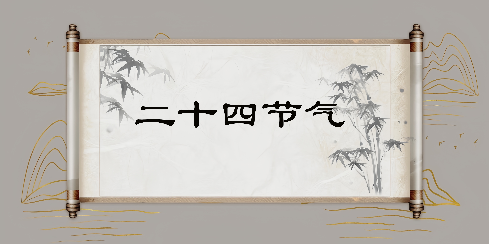

简介
二十四节气是中国劳动人民独创的文化遗产，反应着季节的变化，指导农事和活动，影响着千家万户的衣食住行。一年有24个节气，即立春、惊蛰、清明、立夏、芒种、小暑、立秋、白露、寒露、立冬、大雪、小寒、雨水、春分、谷雨、小满、夏至、大暑、处暑、秋分、霜降、小雪、冬至、大寒。在2016年11月30日，"二十四节气"被正式列入联合国教科文组织人类非物质文化遗产代表作名录2011年，九华立春祭、班春劝农、石阡说春被列入该遗产项目的扩展名录；2014年，三门祭冬、壮族霜...。
历史由来
二十四节气始于秦汉时期，由中国古代天文与农耕结合的智慧创造而成。它以太阳的黄道位置为依据，调和自然与人类的关系，指导农业生产，体现了人与自然的和谐相处。
最早的节气记载可以追溯到《淮南子》，这部汉代的著作首次系统地记录了二十四节气的概念。随后的岁月里，这一系统不断完善，成为中国传统文化和农业生产的重要组成部分。
时间分布
二十四节气均匀分布在一年之中，每个节气大约相隔15天。将鼠标悬停在每个节气上了解更多信息：
节气与农业
二十四节气是自然界四季更替和阴阳变化的反映，同时，二十四节气与中国古代农业也息息相关。二十四节气通过反映季节变化、气温升降、降水多少等气候特征，为农业生产提供了一套时间上的指导体系，帮助农民确定种植作物的最佳时机.
通过遵循二十四节气的指导，农民可以更有效地安排农事活动，提高作物的产量和质量。同时，这也体现了中国传统文化中对自然规律的深刻理解和尊重。
二十四节气不仅仅是一个历法体系，更是一种生活哲学。它教导我们要顺应自然，尊重规律，与大自然和谐共生。让我们传承这份千年的智慧，让二十四节气的精神永远流传下去。